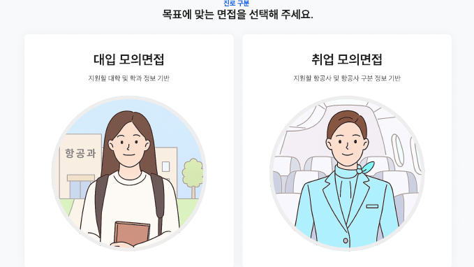

면접왕
대입 면접과 항공사 승무원 면접을 한 곳에서 준비하는 AI 모의면접 서비스입니다. 준비 단계 안내부터 응시, 결과 리포트까지 이어지는 화면을 프론트엔드로 구현했습니다.
반려동물 헬스케어 기기의 실시간 모니터링 앱부터 AI 채용·면접 서비스까지, 기획 단계부터 참여해 화면 구조를 잡고 프론트엔드로 구현해 왔습니다.

대입 면접과 항공사 승무원 면접을 한 곳에서 준비하는 AI 모의면접 서비스입니다. 준비 단계 안내부터 응시, 결과 리포트까지 이어지는 화면을 프론트엔드로 구현했습니다.

이력서 작성과 AI 모의면접, 채용 공고 탐색을 하나로 묶은 채용 플랫폼입니다. 구직자와 기업 양쪽 화면의 UI/UX 개발과 AI 면접 분석 연동을 맡았습니다.

장애인 구직자와 기업, 복지관을 잇는 고용 플랫폼입니다. 세 사용자 그룹이 각각 사용하는 사이트를 웹 접근성 기준에 맞춰 만들었습니다.

심부전 반려동물의 심박과 호흡을 실시간으로 확인하는 두리틀 시리즈입니다. 수의사용 앱의 환자 모니터 화면 구성과 공식 웹사이트 리뉴얼을 담당했습니다.

초등학생의 문해력을 진단하고 학습을 이어가는 교육 서비스입니다. 이미 운영 중이던 학생용 서비스의 고도화와 선생님용 관리 페이지 개발을 맡았습니다.

코로나로 멈춘 학원 커뮤니티를 메타버스 오피스로 옮긴 창업 프로젝트입니다. 도트 그래픽 맵과 그 안에서 오가는 커뮤니티 화면을 웹으로 구현했습니다.

에너지 사용 데이터를 1인칭 시점으로 걸어 다니며 보는 가상 전시관입니다. 팀장으로 기획을 이끌고 Unity로 전시 공간과 관람 동선을 만들었습니다. 한전KDN 데이터 결합·활용 아이디어 공모전에서 장려상을 받았습니다.

간병인이 필요한 사람과 간병인을 매칭하고 주변 요양 시설을 찾는 안드로이드 앱입니다. 기획부터 프론트엔드와 백엔드까지 혼자 만들었습니다.

스케치 자료를 올리고 종류별로 정리해 그림 실력을 키우는 안드로이드 앱입니다. 1인 개발로 화면과 데이터 구조를 모두 담당했습니다.
홀로그램 화면과 대화하며 주문하는 카페 키오스크입니다. Gemini API를 붙여 주문 대화가 오가는 화면의 프론트엔드를 구현했습니다.

Frontend Developer
실용성을 쫓는 개발자입니다. 화면을 예쁘게 만드는 것만큼, 그 화면이 실제 업무와 사용 환경에서 버티는지를 중요하게 봅니다.
동물병원 수술실에서 쓰이는 모니터링 앱처럼 실패하면 안 되는 화면과, 장애인 구직자가 쓰는 서비스처럼 접근성이 곧 사용 가능 여부를 결정하는 화면을 만들어 왔습니다.